— 原创小说 · 终章节选
旧日来风
两位女性的成长与重逢
怀里的杂志被风吹开，我没有按住，纸页就这样哗啦啦翻过去。夜奔那一页很快被吹到了后面。
前面还有很多页。
风从旧日来，相见再重逢。
第十章 江跃｜我等你
一舟
《旧日来风》
小说
两位女性多年后的重逢，
一次灾难，让她们重新面对过去。
— 原创小说 · 终章节选
两位女性的成长与重逢
怀里的杂志被风吹开，我没有按住，纸页就这样哗啦啦翻过去。夜奔那一页很快被吹到了后面。
前面还有很多页。
风从旧日来，相见再重逢。
第十章 江跃｜我等你
一舟
小说
两位女性多年后的重逢，
一次灾难，让她们重新面对过去。
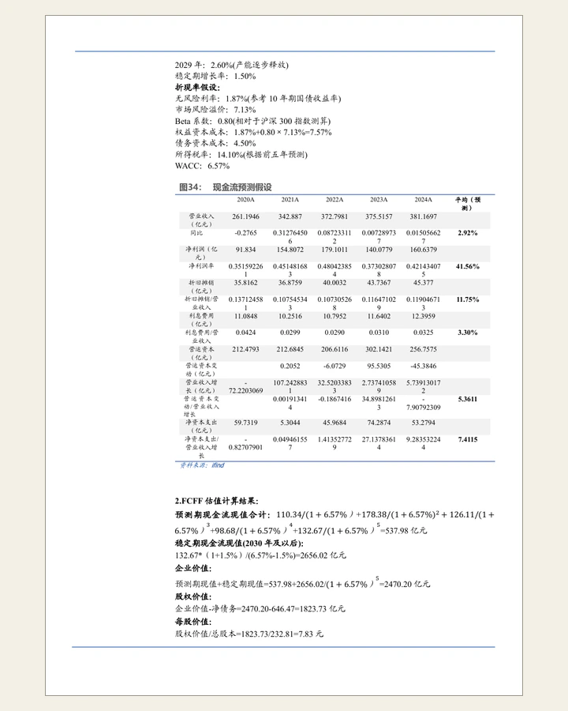
金融研究
从业务、行业与财务数据出发，
研究公司价值与主要风险。
有些想法，写成了文字；有些，做成了可以点开的小玩意。
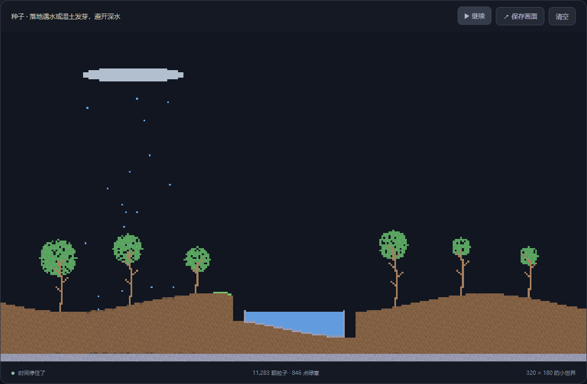
撒一点沙，落一点雨，种一片自己的小森林。
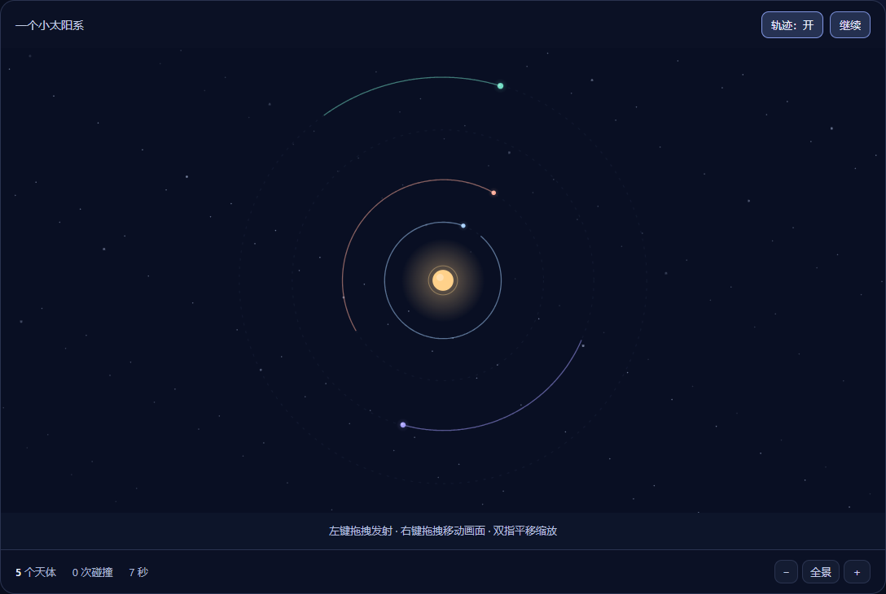
发射一颗星球，看看它会去哪里。
一舟工具室 画图表、理观点、记时间。
打开工具室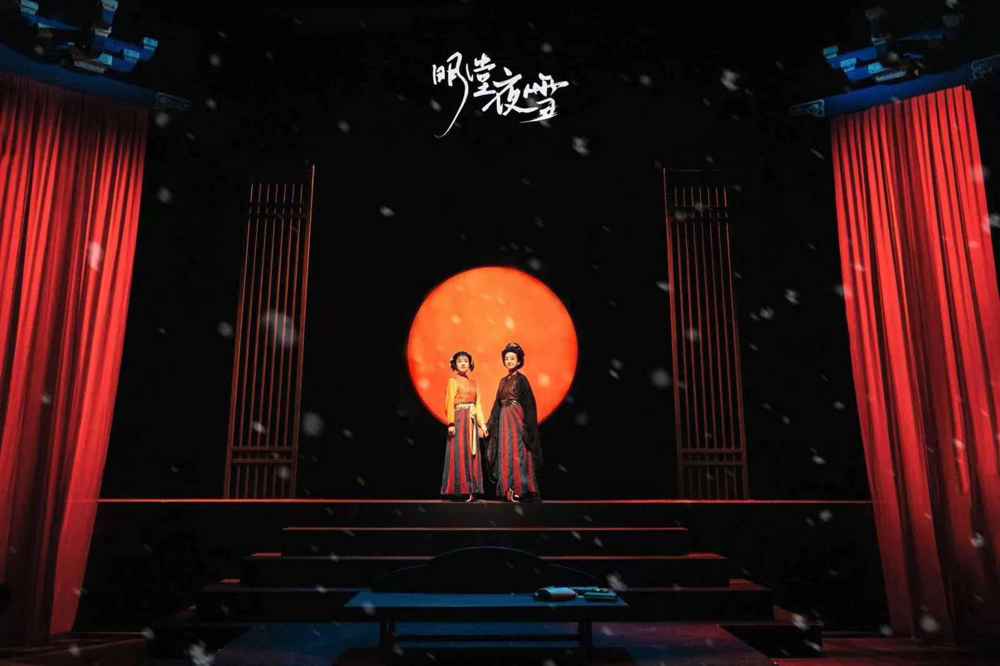
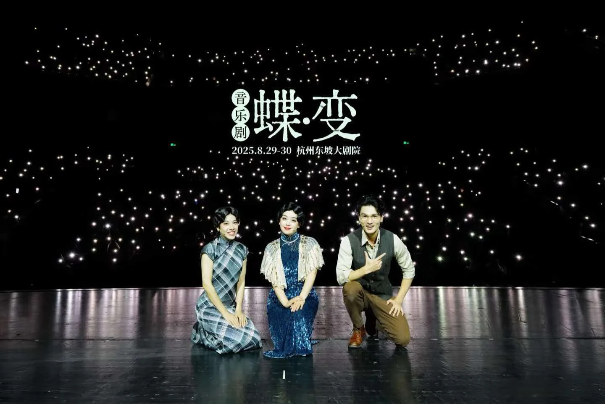
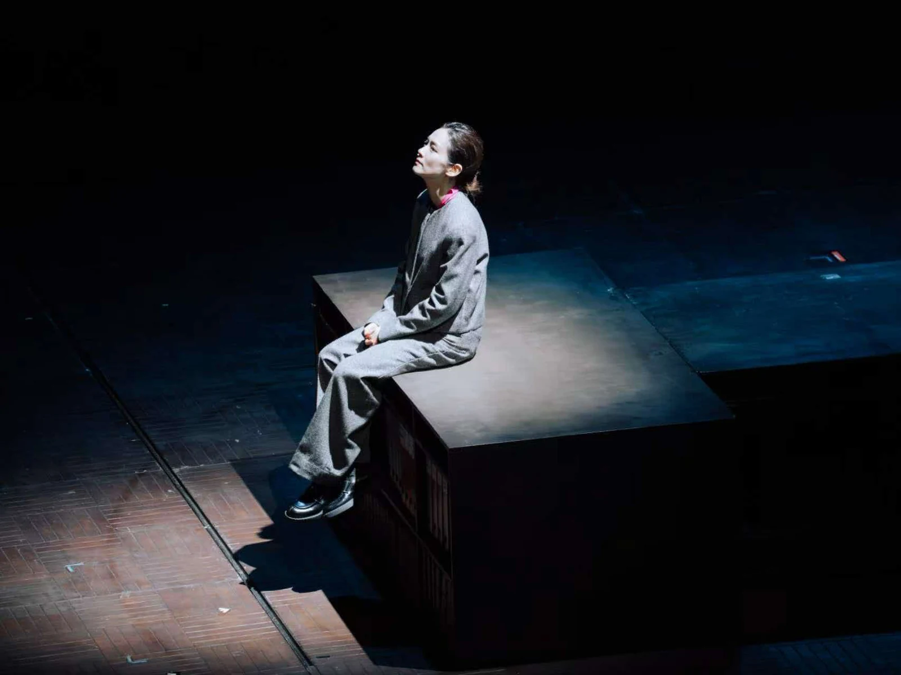
一些读过的书，和停留过的句子。
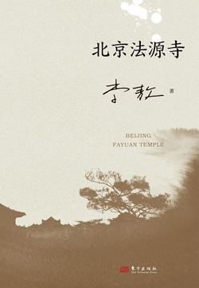
书摘
善必须行，藏在心里是不行的。
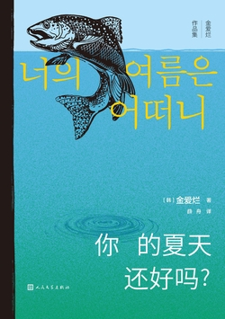
书摘
每天我都在痛饮城市。
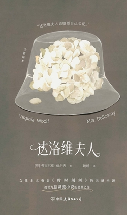
书摘
达洛维夫人说她要自己买花。
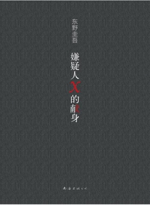
一舟的短评
汤川是最大的变量，如果没有他，就没有真相浮出水面。
继续大三的课业学习。
阅读数字金融与行为金融文献，
摸索综述论文的写法。
结合文献管理软件与 Codex，
尝试改进科研工作流。
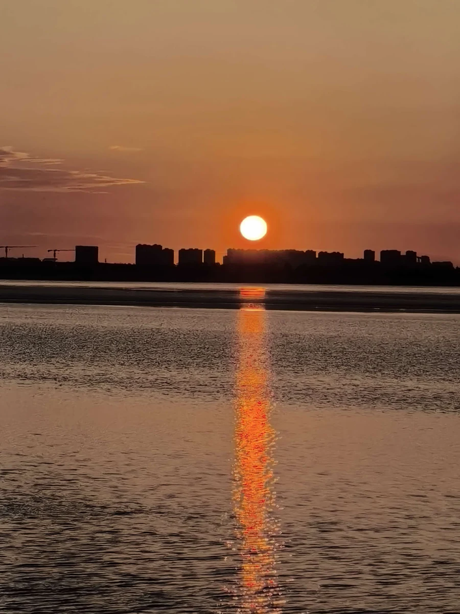
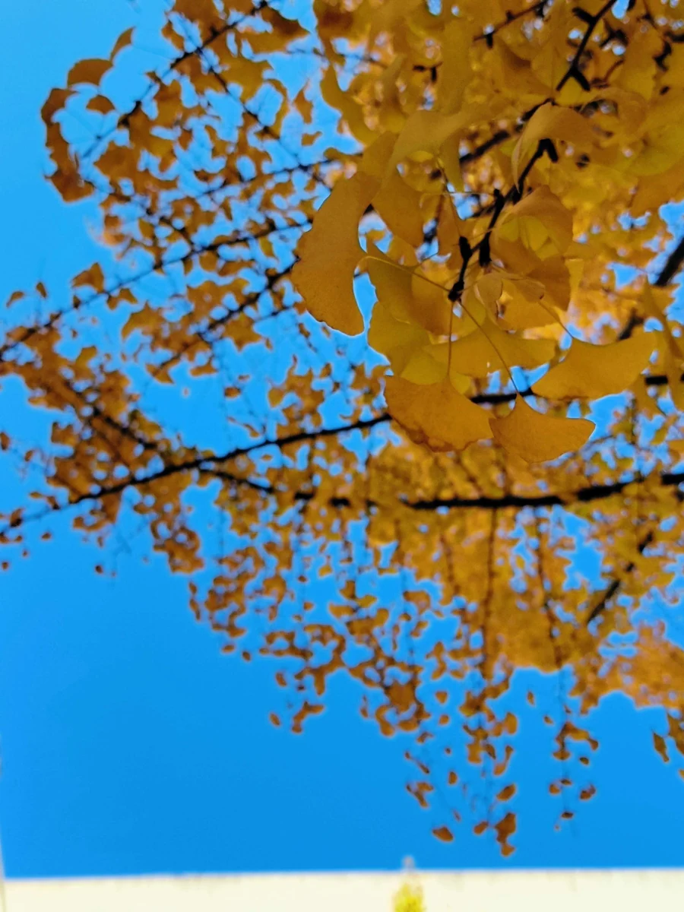
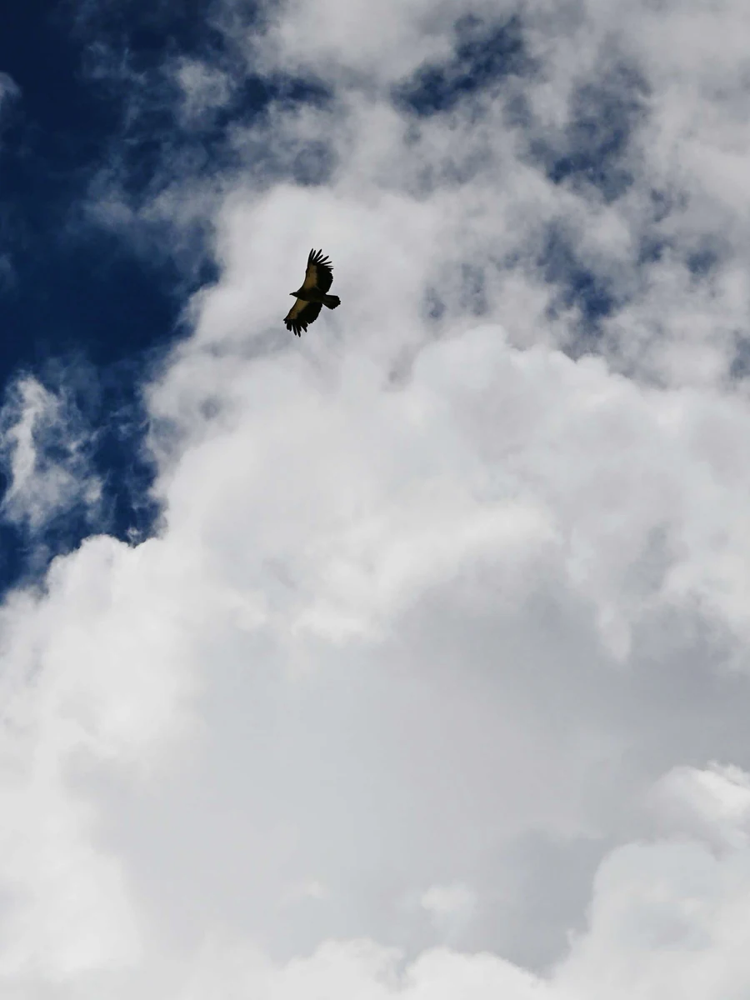
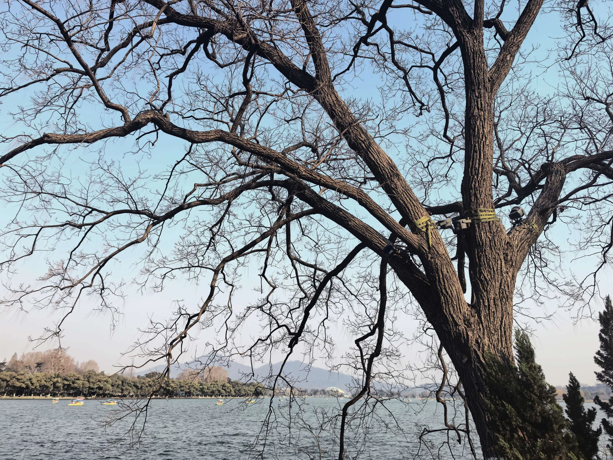
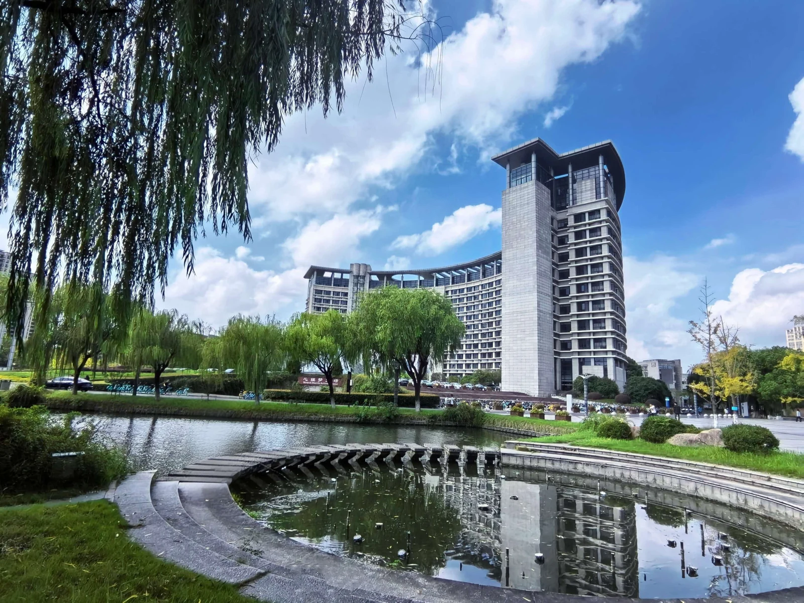
生活相册 · 滚动看看